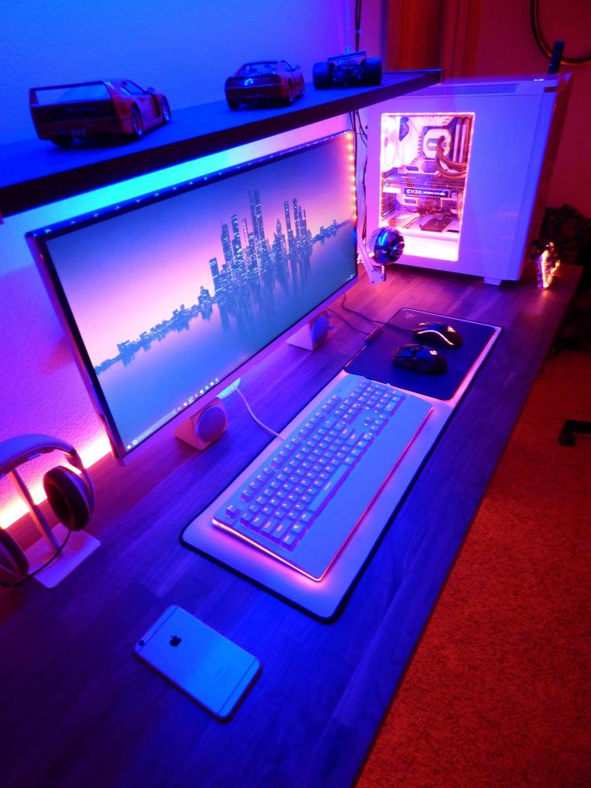
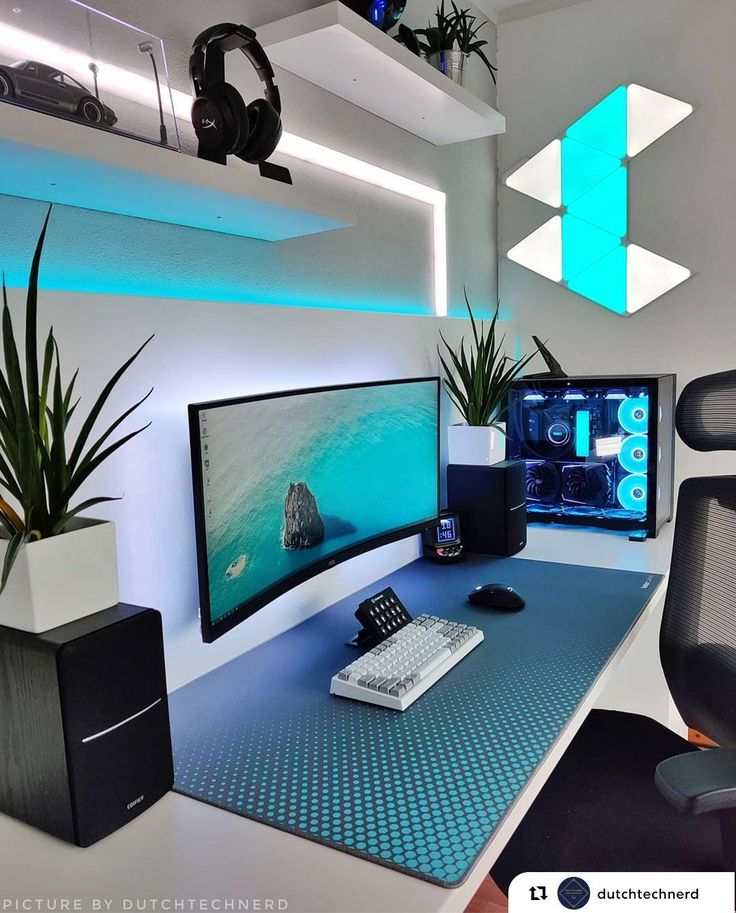
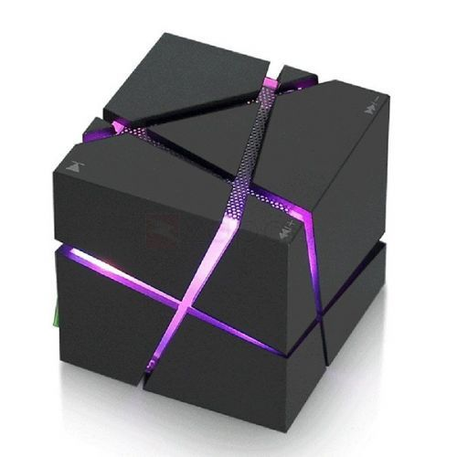

Los ordenadores permiten realizar cálculos y tareas de forma rápida y precisa.

Un ordenador facilita el acceso a información y el desarrollo de proyectos.

Estos dispositivos son esenciales en nuestra vida personal y profesional.
Los gadgets nos ayudan a simplificar tareas y mejorar nuestra productividad.

Este cubo púrpura irradia un brillo cautivador en cualquier entorno.